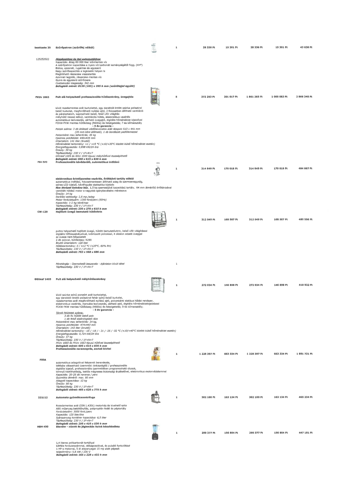

| Tétel | Menny. | Egys. | Anyag e.ár (net HUF) | Díj e.ár (net HUF) | Anyag összesen (net HUF) | Díj összesen (net HUF) | Anyag+Díj összesen (net HUF) |
|---|---|---|---|---|---|---|---|
| besttaste 20 Szűrőpatron (szűrőfej nélkül) | 1 | NaN | 28 336 | 15 301 | 28 336 | 15 301 | 43 638 |
| FKUv 1663 Pult alá helyezhető professzionális hűtőszekrény, üvegajtós | 5 | NaN | 372 253 | 201 017 | 1 861 265 | 1 005 083 | 2 866 348 |
| F64 EVO Professzionális kávédaráló, automatikus indítású | 1 | NaN | 314 849 | 170 018 | 314 849 | 170 018 | 484 867 |
| CW-120 Hajlított üvegű bemutató hűtővitrin | 1 | NaN | 312 049 | 168 507 | 312 049 | 168 507 | 480 556 |
| GGUesf 1405 Pult alá helyezhető mélyhűtőszekrény | 1 | NaN | 272 034 | 146 898 | 272 034 | 146 898 | 418 932 |
| F50A Professzionális narancsprés, asztali kivitel | 1 | NaN | 1 228 397 | 663 334 | 1 228 397 | 663 334 | 1 891 731 |
| 221112 Automata gyümölcscentrifuga | 1 | NaN | 302 100 | 163 134 | 302 100 | 163 134 | 465 234 |
| HBH 450 Blender - zúzott és jégkockás italok készítéséhez | 1 | NaN | 290 377 | 156 804 | 290 377 | 156 804 | 447 181 |
